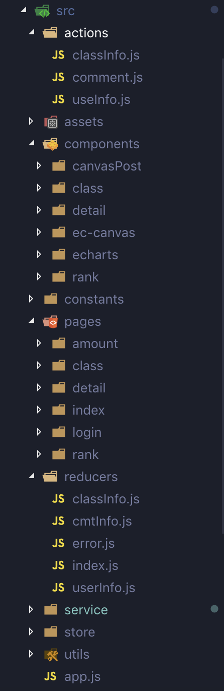
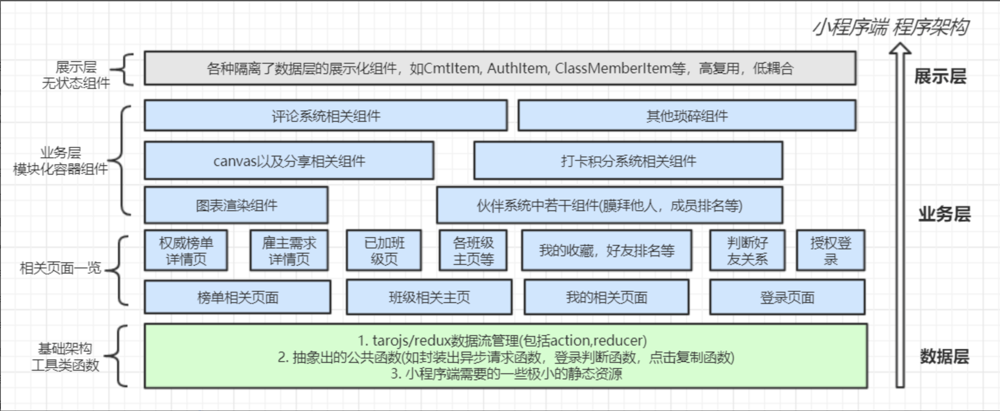
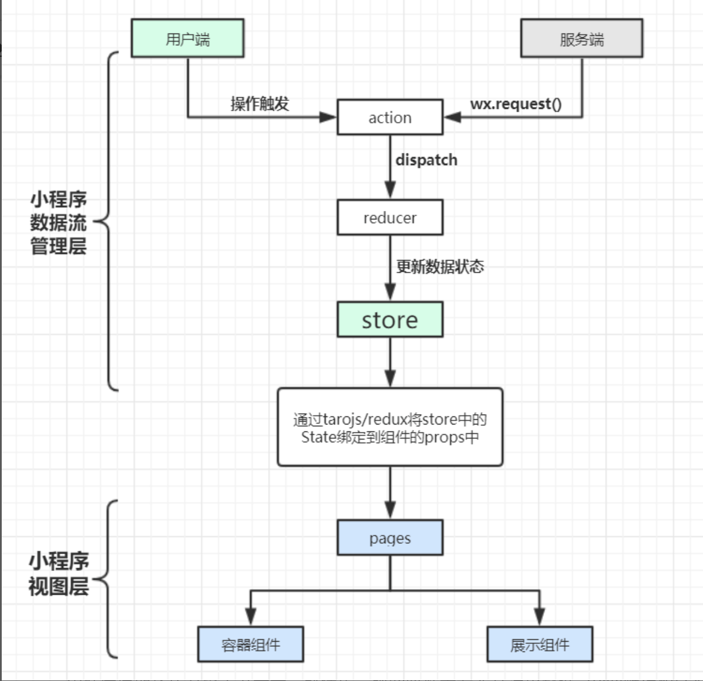

项目基本介绍
技术选型
采用微信小程序开发框架— Taro，截止目前 taro 框架在 github 上的 star 数已经突破 18k，该框架采用 react 语法开发微信小程序，在一定程度上解决了小程序原生的开发方式的一些不足。
开发环境
- 环境：node v11.0，taro 官方脚手架模块化及打包
- 编辑器：vscode
- 调试与测试：微信开发者工具稳定版
第三方框架与组件
- 开发框架：Taro
- ui 框架：taro-ui
- 数据流框架：tarojs/redux
- 图表渲染框架：echarts-for-weixin
项目目录如下所示

整体架构

项目数据流状态的管理
- 数据状态管理是前端开发中较为困难的一部分，若前期数据状态管理十分混乱，会导致在后续产品迭代，需求变化的过程中，出现难以维护的情况。
- 由于此小程序使用的 taro 开发框架应用 react 语法，而 redux 作为一种可预测的状态容器，在 react 生态中十分的流行，加之 taro 对 redux 的支持非常好，taro 官方也十分支持在 taro 框架中使用 redux 进行管理数据，此小程序采用 tarojs/redux 来进行管理数据状态。

项目中对工具函数的封装
对小程序 request 请求的封装
首先看下代码
1 | import Taro from "@tarojs/taro"; |
简单介绍一下～
- 暴露出 url, method, data 基本可以满足整个项目所有的 request 请求
- 设置统一的域名，方便项目由前期的测试域名迁移到生产环境下的域名，如果有多个域名下请求的话，便可以新建一个配置文件，使得更改更方便。
- 统一的在 request 请求中加入 loading 效果，做到网速慢的情况有一定的反馈，省的每次请求时都需要手动加上。
- 返回一个 promise 对象，在其他文件引用的时候可以通过.then 来处理请求之后的逻辑。
redux 中封装创建 action 的函数
show the code !
1 | import Taro from "@tarojs/taro"; |
具体分析在另一篇博文中有详细介绍。
项目中遇到的困难（都解决了哈哈哈）
小程序无法获取用户微信好友，但是产品同学觉得微信好友 pk 是一个非常重要的事情，那怎么才能获取微信好友呢？
这里和后端同学讨论了一段时间，最终想到的解决方案是通过用户分享小程序的 url 上携带用户标识，在新用户点击加入额小程序完成登陆操作之后立即获取该用户以及源用户的 id，将其发送到后端，后端建立好友关系网，从而实现小程序内部好友的建立。
并且此方法依赖于用户的主动分享，所以也不算上打扰用户或者窥探用户隐私啦～～并且在小程序内部已有相关的引导说明
首先在页面中携带用户标识参数
1 | onShareAppMessage = res => { |
然后在新用户登陆的时候调用写好的“添加好友”函数进行判断以及处理
1 | import Taro from "@tarojs/taro"; |
产品中间经历了一次大的迭代，登陆策略上都出现了比较大的变化，但是由于开发版，体验版，正式版三个版本共用一个缓存，又由于登陆策略的特殊性（这个就不细说啦，详见上个问题），版本更替测试的时候，第一版用户使用的依然是第一版的数据缓存，用户 id 分配便出现两个版本的混乱，如何解决呢？
其实这个也不算是什么大问题，主要问题的起源来自版本更新的时候涉及登录策略的改变（这个是由于上个问题导致的，即在登录过程中需建立好友关系网），再加上两个版本的开发版体验版正式版全部共用一个缓存！！
当然这个问题在最后也得到了完美的解决，即在登录函数中添加一个对 version 的维护，使得第一版中各个版本的用户更新 storage 的内容
这里要注意，由于项目的特殊性，和小程序的版本更新 api 想要解决的不是同一个问题，这个项目最关键的主要是开发版体验版正式版共用一个缓存导致的，而非小程序迭代更新导致的，故无法直接通过官方的 api 来解决
结合上个问题，可以看到最终的登录代码是这样的
1 | import Taro from "@tarojs/taro"; |
再谈一下利用 redux 方便的实现不同组件间数据的联动
首先将 redux 状态树绑定到组件内部
1 | @connect( |
然后需要在 componentDidUpdate 周期函数内对状态树进行监听，并发送请求更新状态
1 | componentDidUpdate(prevProps) { |